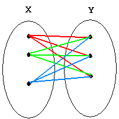
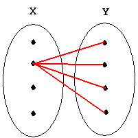
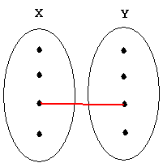
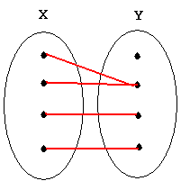
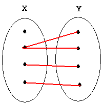
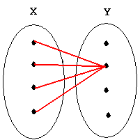
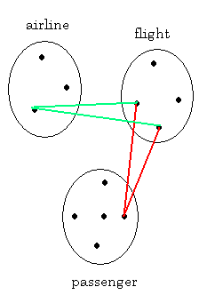
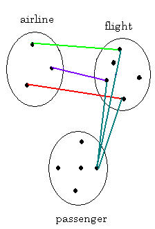
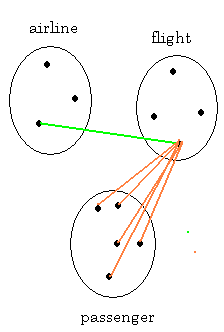
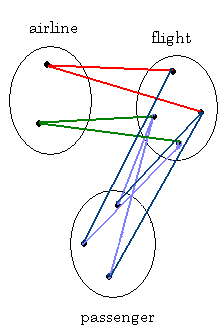

CMPS 2120 Lecture Notes - Predicates with Nested Quantifiers
----------------------------------
The Order of Quantifiers
page 52.
Example 3, 4, 5
-----------------------------------------------------
Translating from Nested Quantifiers into English
page 55.
Example 9, 10
--------------------------------------------------------
Translating English Sentences into Logical Expressions
page 56.
Example 11, 12, 13
--------------------------------------------------------
Negating Nested Quantifiers
page 57.
Example 14
--------------------------------------------------------
--------------------------------------------------------
Rules of inference for Propositional Logic
modus ponens
page 65.
Example 1
--------------------------------------------------------
Table 1 Rules of Inference
p: it's sunny
q: it's cold
r: we will go swimming
s: we will go canoeing
t: we will be home by sunset
argument
--------
1. ~p ^ q
2. r -> p
3. ~r -> s
4. s -> t
--------
t
--------------------------------------------------------
Table 2 Rules of Inference for Quantified Statements
page 71.
Extra example, Marla
--------------------------------------------------------
------------------------------------------------------------------
Predicate Functions with Two Variables and Nested Quantifiers
------------------------------------------------------------------
('==' denotes logical equivalence and '!==' denotes not equivalent)
U : universe of discourse; x and y are members of U; P is some predicate over U
∀x∀y P(x,y)
Meaning: For all x and for all y, P(x,y) is true.
Can be transposed: ∀x∀y P(x,y) == ∀y∀x P(x,y)
Negation: ∃x∃y ~P(x,y) means P(x,y) is false for some pair x,y
∃x∃y P(x,y)
Meaning: For some x and for some y, P(x,y) is true.
Can be transposed: ∃x∃y P(x,y) == ∃y∃x P(x,y)
Negation: ∀x∀y ~P(x,y) means P(x,y) is false for all pairs x,y
∀x∃y P(x,y)
Meaning: For all x, P(x,y) is true for some y.
Cannot be transposed: ∀x∃y P(x,y) !== ∃y∀x P(x,y)
Negation: ~(∀x∃y P(x,y)) == ∃x~∃y P(x,y) == ∃x∀y ~P(x,y)
means there is an x such that for all y, P(x,y) is false
∃x∀y P(x,y)
Meaning: There exists an x such that for all y, P(x,y) is true
Cannot be transposed: ∃x∀y P(x,y) !== ∀y∃x P(x,y)
Negation: ~(∃x∀y P(x,y)) == ∀x ~∀y P(x,y) == ∀x ∃y ~P(x,y)
means for all x there is some y such that P(x,y) is false.
To Summarize:
LOGICAL EQUIVALENCES FOR NESTED QUANTIFIERS
∀x∀y P(x,y) ≡ ∀y∀x P(x,y)
~(∀x∀y P(x,y)) ≡ ∃x∃y ~P(x,y)
∃x∃y P(x,y) ≡ ∃y∃x P(x,y)
~(∃x∃y P(x,y) ≡ ∀x∀y ~P(x,y)
∀x∃y P(x,y) !≡ ∃y∀x P(x,y)
~(∀x∃y P(x,y) ≡ ∃x∀y ~P(x,y)
∃x∀y P(x,y) !≡ ∀y∃x P(x,y)
~(∃x∀y P(x,y)) ≡ ∀x∃y ~P(x,y)
EXAMPLE.
Universe of discourse: {sam, sally, joe, nancy}
Predicate Function L(x,y): x loves y

∀x∀y L(x,y): "Everyone loves everybody else."
Negation: ∃x∃y ~L(x,y): "There is someone who doesn't love anyone."
(one person left out of the set so the graphic is not as messy)

∃x∀y L(x,y): "Someone loves everybody."
Negation: ∀x∃y ~L(x,y): "Everybody has someone they don't love."

∃x∃y L(x,y): "Someone loves somebody."
Negation: ∀x∀y ~L(x,y): "No one loves anybody."

∀x∃y L(x,y): "Everyone loves somebody."
∃x∀y ~L(x,y): "There is someone who doesn't love anybody."

∀y∃x L(x,y): "Everybody has someone who loves them."
Negation: ∃y∀x ~L(x,y): "There is someone whom nobody loves."

∃y∀x L(x,y): "There is someone whom everyone loves."
Negation:∀y∃x ~L(x,y): "Everybody has someone who doesn't love them."
(No one is loved by everyone.)
EXAMPLES OF BINDING
∀x L(x,Joe) "Everybody loves Joe."
∀xL(x,x) "Everyone loves him/herself."
∃x~L(Nancy,x) "There is somebody whom Nancy does not love."
EXAMPLES USING LOGICAL CONNECTIVES
∃y∀x L(x,y)->∀x∃y L(x,y) "If there is someone that everybody loves then
everybody loves somebody." (TRUE)
∀x∃y L(x,y)->∃y∀x L(x,y) "If everybody loves somebody then there is someone
that everybody loves." (FALSE)
((∃y∀xL(x,y) ^ ∃z∀xL(x,z)) -> y = z)) # note the x's are in different scopes
"There is exactly one person whom everybody loves."
∃x∃y( L(Nancy,x) ^ L(Nancy,y) ^ (x != y) ^ (∀z L(Nancy,z)->(z = x) v (z = y))
"Nancy loves exactly two people."
∃x∃y (L (x,y) ^ x==y ) "Someone loves him/herself."
∀x∀y (L (x,y) -> x==y ) "No one loves anyone but him/herself."
Rewrite each of these statements so no negations appear outside predicates
or outside complex propositional statements.
Recall:
~∀xP(x) == ∃x~P(x)
~∃xP(x) == ∀x~P(x)
a) ~∀x∀yP(x,y)
∃x~∀yP(x,y)
∃x∃y~P(x,y)
b) ~∀y∃xP(x,y)
∃y~∃xP(x,y)
∃y∀x~P(x,y)
c) ~∀y∀x(P(x,y) V Q(x,y)
∃y~∀x(P(x,y) V Q(x,y)
∃y∃x~((P(x,y) V Q(x,y))
∃y∃x(~P(x,y) ^ ~Q(x,y))
d) ~(∃x∃y~P(x,y) ^ ∀x∀yQ(x,y))
~(∃x∃y~P(x,y)) v ~(∀x∀yQ(x,y))
∀x~∃y~P(x,y)) v ∃x~∀yQ(x,y)
∀x∀yP(x,y) v ∃x∃y~Q(x,y)
e) ~∀x(∃yAzP(x,y,z) ^ Ez∀yP(x,y,z))
∃x~(∃yAzP(x,y,z) ^ Ez∀yP(x,y,z))
∃x(~∃yAzP(x,y,z) v ~Ez∀yP(x,y,z))
∃x(∀y~AzP(x,y,z) v Az~∀yP(x,y,z))
∃x(∀yEz~P(x,y,z) v Az∃y~P(x,y,z))
//////////////////////////////////////////////////////////////////////////
Predicate Calculus can describe complex relationships among multiple
sets (this is the foundation of a relational database).
Use quantifiers and predicates with more than one variable to express the
statement below.
Universe: students at CSUB, courses at CSUB, departments at CSUB
Variables: s for students, c for courses, d for departments
Predicate Functions: T(s,c): student s takes course c
O(d,c): department d offers course c
"Some student has taken all the courses offered by a department at CSUB."
Not correct:
Es Ed Ac (T(s,c) ^ O(d,c)) "There is a student who takes all courses
and a dept that offers all courses at CSUB."
Not correct either:
Ac Es Ed (T(s,c) ^ O(d,c)) "All courses have been taken and offered."
Still not correct:
Es Ac Ed (T(s,c) ^ O(d,c)) "There is a student who has taken all courses
and all courses have been offered by a dept."
The problem is limiting courses to only those offered by a particular dept.
Try implication. This is very close but not quite correct:
Es Ed Ac (T(s,c) -> O(d,c)) "There is a student who takes only courses
offered by one department."
Try the converse. FINALLY!
Es Ed Ac (O(d,c) -> T(s,c)) "There is a dept, such that if that dept
offers a course then there is one particular
student who has taken it."
NOTE: The quantifier order makes a difference. This is not quite correct:
Ed Ac Es (O(d,c) -> T(s,c)) "If some dept has offered a course then there
is some student who has taken it."
You can also get the correct solution with a dysjunction:
Es Ed Ac (~O(d,c) v T(s,c)) "There is a particular student and a particular
dept for all courses, such that, either the
student hasn't taken the course or the
department offers it."
More examples:
Es Ac O(math,c) -> ~T(s,c) "There is a student who hasn't taken any
courses offered by the math department"
As Ec O(biology,c) ^ T(s,c) "All students have taken a Biology course"
AsEc T(s,c) "All students have taken a course"
EcAs T(s,c) "There is a course that all students must take"
Q: What about using a predicate function with three variables?
It will work for some statements:
F (s, c, d): "s has taken course c offered by department d"
Es Ad Ec F (s,c,d): "There is a student who has taken a course from
every department."
But the problem is still how to limit courses to a particular department.
This won't work:
Es Ac Ed F(s, c, d) "There is a student who has taken all courses from
whatever department has offered them."
This won't work either:
Es Ed Ac F(s, c, d) "There is a student who has taken all courses, and
those courses were offered by one department."
Conclusion: Three variables won't work for the original problem.
AIRLINE PROBLEM
Universes of discourse.
P: all passengers at LAX
F: all flights at LAX
A: all airlines at LAX
Let 'p', 'f', and 'a' denote a passenger from P, a flight from F
and an airline from A, respectively.
Predicate functions.
T(p,f): passenger 'p' takes flight 'f'
O(a,f): airline 'a' offers flight 'f'
PROBLEM 1.

∃p∃a∀f(O(a,f) -> T(p,f))
"Some passenger has taken all flights offered by some airline."
PROBLEM 2.

∃p∀a∃f (O(a,f) ^ T(p,f))
"Some passenger has taken some flight on all airlines."
Why is the following statement not correct for this problem?
∃p∃f∀a (O(a,f) ^ T(p,f))
In English this means "Some flight is offered by all airlines and some
passenger takes it." Obviously, not the same thing.
PROBLEM 3.

∃a∃f∀p (O(a,f) ^ T(p,f))
"Some airline offers some flight that all passengers have taken."
PROBLEM 4.

∀p∀a∃f (O(a,f) ^ T(p,f))
"All passengers have taken some flight on all airlines."
In this problem not all arrangements make sense; e.g.:
∃p∀a∃f (T(p,f) -> O(a,f))
"If some passenger takes a flight then all airlines offer that flight."